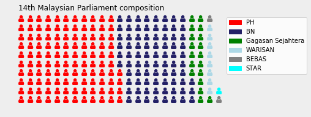
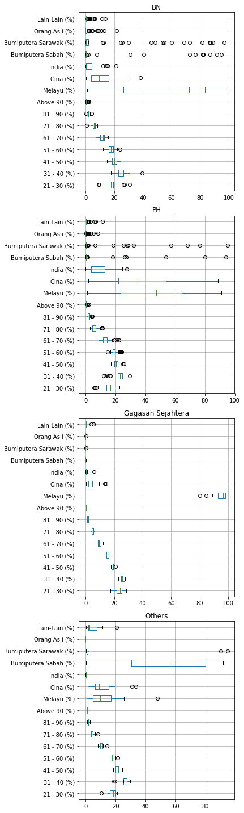
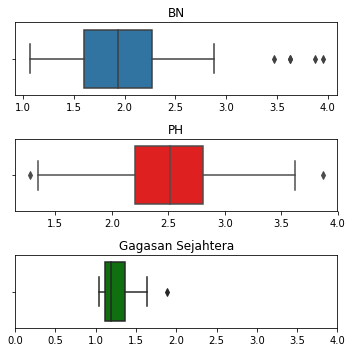

There’s an interesting blog post up on DataTarik about using random forests to model the outcomes of Malaysia’s 14th general election (GE14). While I have my reservations about their machine learning approach, I think it’s an interesting dataset, so I downloaded their data and code and played around with it in Python.
For those not familiar with Malaysia, some background:
- BN refers to the National Front (Barisan Nasional), the current largest opposition party and the ruling party since independence, and PH refers to Pact of Hope (Pakatan Harapan), the party currently in government. I sometimes refer to Gagasan Sejahtera as PAS (Malaysian Islamic Party), as they were the leading party in this electoral coalition.
- Melayu, Cina and India refer to ethnic Malays, Chinese and Indians respectively, whereas Bumiputera Sabah/Sarawak and Orang Asli are various indigenous tribes in Malaysia. Malays are also regarded as indigenous, and will be referred to as such.
- Geographically, Malaysia comprises of parts of the Malay Peninsula and Borneo island (West and East Malaysia respectively).
Variable names: agevars refers to proportions of people in several bins of age groups, racevars refers to proportions of people in each ethnic group, and features is the union of agevars and racevars. target is the outcome of the election.
Who won?
Thought I’d just do a quick waffle chart using the sweet pywaffle package.
from pywaffle import Waffle
data = ge14.target.value_counts()
fig = plt.figure(
FigureClass=Waffle,
rows=10,
values=data,
colors=("red", "#232066", "green", "lightblue", 'grey', 'cyan'),
title={'label': '14th Malaysian Parliament composition', 'loc': 'left'},
labels=["{0}".format(k) for k, v in data.items()],
icons = 'user',
legend={'loc': 'upper left', 'bbox_to_anchor': (1, 1)}
)
fig.gca().set_facecolor('#EEEEEE')
fig.set_facecolor('#EEEEEE')
fig.set_tight_layout(False)
plt.show()
Overall distribution of demographics across constituencies
With the data we have, there are two stories to be told:
- Voting behaviour by ethnicity:
- Gagasan Sejahtera does well in constituencies with high Malay concentration, low Chinese and Indian concentration.
- We may want to look at geographical subgroups (Peninsula/Borneo), since the Borneo parties don’t contest in the Peninsula, and some of the ethnic groups covered are sparse in the Peninsula.
- For BN, the distribution of wins by ethnicity are more tightly distributed around low Indian and Chinese population constituencies.
- Both BN and PH have wins across a range of Malay-minority and Malay-majority constituencies. BN does not have any seats in Chinese-majority constituencies.
- Voting behaviour by age:
- Not very clear pattern for age - at least not with the boxplot
- PAS wins in ‘younger’ constituencies (higher pct 21-30, 31-40)
- PAS wins are very uniform in terms of age and ethnicity demographics
fg, ax = plt.subplots(nrows =4, figsize = (6,20))
ge14[ge14.target =='BN'][features].boxplot(vert = False, ax = ax[0])
ax[0].set_title("BN")
ge14[ge14.target=='PH'][features].boxplot(vert = False, ax = ax[1])
ax[1].set_title("PH")
ge14[ge14.target=='Gagasan Sejahtera'][features].boxplot(vert = False, ax = ax[2])
ax[2].set_title("Gagasan Sejahtera")
ge14[~ge14.target.isin(['BN', 'PH', 'Gagasan Sejahtera'])][features].boxplot(vert = False, ax = ax[3])
ax[3].set_title("Others")
plt.tight_layout()
In which seats do these parties win?
Ethnic diversity of constituencies
Using scipy‘s entropy function, I try to determine which parties win in ethnically ’diverse’ and ‘less-diverse’ constituencies. The boxplots below confirm what we already know from the boxplots above - that Gagasan Sejahtera appeals to a very homogenous group of voters.
- BN wins across diverse and non-diverse constituencies;
- PH also wins across diverse and non-diverse constituencies, but its median constituency is more diverse than BN’s median constituency.
- PAS wins in non-diverse constituencies.
The diversity index used here is the Shannon entropy index, given by $$H'=-\Sigma p_i \log{p_i}$$ The exponent of $H'$ has a nice interpretation. It is the effective number of species, i.e. how many species there would be if each species had an equal amount of observations. You can convince yourself that this is true by running the code exp(-(0.5*log(0.5)+0.5*log(0.5))) (in R), which should return the result 2, meaning the diversity in the data is effectively two equally sized classes.
from scipy.stats import entropy
entropy_const = np.array([entropy(ge14[racevars].iloc[i,:].tolist()) for i in range(len(ge14))])
# use effective number of species instead https://medium.com/@sam.weinger/how-diverse-are-names-in-america-f74b07e031bd
effective_number = np.exp(entropy_const)
np.mean(effective_number[ge14.target=='BN']), np.mean(effective_number[ge14.target=='PH']), np.mean(effective_number[ge14.target=='Gagasan Sejahtera'])(2.023986123800037, 2.4850578347860295, 1.2839901761045327)fg, ax = plt.subplots(nrows = 3, figsize = (5,5))
sns.boxplot(effective_number[ge14.target=='BN'], ax = ax[0])
ax[0].set_title("BN")
sns.boxplot(effective_number[ge14.target=='PH'], ax = ax[1], color = 'r')
ax[1].set_title("PH")
sns.boxplot(effective_number[ge14.target=='Gagasan Sejahtera'], ax = ax[2], color = 'g')
ax[2].set_title("Gagasan Sejahtera")
plt.xlim(0,4)
plt.tight_layout()
Peninsula-Borneo divide?
Since there are different parties in Peninsula and Borneo, I calculate age-ethnicity cross-tabulations for Peninsula and Borneo respectively. Age and ethnicity here refers to the demographic with the highest share in each constituency.
Peninsula
PH wins all predominantly ethnic Chinese seats and most predominantly ethnic Malay seats in the Peninsula.
ethnicity = ge14[racevars].idxmax(axis = 1)
age = ge14[agevars].idxmax(axis = 1)
pd.crosstab(ge14[peninsula].target, ethnicity)| Cina (%) | Melayu (%) | |
|---|---|---|
| BN | 0 | 49 |
| Gagasan Sejahtera | 0 | 18 |
| PH | 33 | 65 |
pd.crosstab(ge14[peninsula].target, age)| 21 - 30 (%) | 31 - 40 (%) | 41 - 50 (%) | 51 - 60 (%) | |
|---|---|---|---|---|
| BN | 2 | 47 | 0 | 0 |
| Gagasan Sejahtera | 3 | 15 | 0 | 0 |
| PH | 0 | 77 | 11 | 10 |
Borneo
BN is strongest in predominantly-indigenous seats, whereas PH is strongest in predominantly ethnic Chinese seats. PH made up for its weakness in indigenous seats with its partnership with WARISAN. Both BN and PH win the most seats where most people are aged between 31 and 40.
pd.crosstab(ge14[np.invert(peninsula)].target, ethnicity)| Bumiputera Sabah (%) | Bumiputera Sarawak (%) | Cina (%) | Melayu (%) | |
|---|---|---|---|---|
| BEBAS | 0 | 2 | 0 | 0 |
| BN | 10 | 14 | 0 | 6 |
| PH | 3 | 4 | 8 | 1 |
| STAR | 1 | 0 | 0 | 0 |
| WARISAN | 7 | 0 | 0 | 1 |
pd.crosstab(ge14[np.invert(peninsula)].target, age)| 31 - 40 (%) | 41 - 50 (%) | 51 - 60 (%) | |
|---|---|---|---|
| BEBAS | 0 | 2 | 0 |
| BN | 17 | 11 | 2 |
| PH | 8 | 5 | 3 |
| STAR | 1 | 0 | 0 |
| WARISAN | 8 | 0 | 0 |